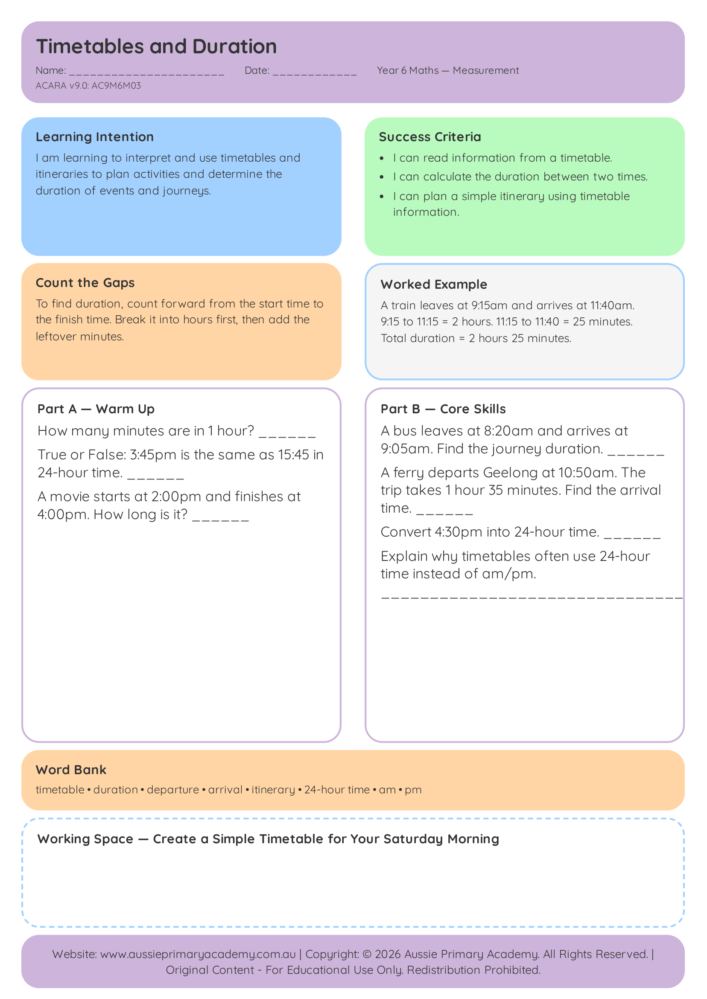

Year 6 · Maths · Free Printable
Timetables and Duration
Practise elapsed-time calculations, 24-hour time and journey planning with this free Year 6 worksheet. The two-page PDF includes warm-up and core questions, a Geelong train-day-trip challenge, a Saturday-morning timetable activity and an answer key.
Worksheet Preview

About This Worksheet
This two-page Year 6 Maths worksheet teaches students to calculate duration by counting forward from a start time. It includes a worked train-duration example, warm-up questions about minutes, 24-hour time and elapsed time, core questions about a bus journey and a Geelong ferry arrival, and a challenge using morning and return train times for a Geelong day trip. Page 1 also provides space to create a simple Saturday-morning timetable. The answer key is on page 2.
Learning Intention
Students will read and interpret timetables, calculate duration between two times, and apply these skills to solve real-world time and schedule problems.
Australian Curriculum
Australian Curriculum v9.0 — AC9M6M03: “Interpret and use timetables and itineraries to plan activities and determine the duration of events and journeys.”
Teacher Notes
Use real bus, train or school event timetables alongside this worksheet for authentic practice. Encourage students to explain their thinking when calculating duration (for example, counting on from the start time or converting to minutes). Discuss strategies for crossing the hour and for multi-step schedule questions.
Skills Practised
- Reading and interpreting timetables
- Calculating elapsed time / duration
- Comparing start and finish times
- Solving multi-step schedule problems
- Applying time skills to real-world contexts
What Students Will Practise
- Recall how many minutes are in an hour and recognise equivalent 12-hour and 24-hour times
- Calculate elapsed time for a movie and a bus journey
- Find an arrival time when a ferry departure time and journey duration are given
- Convert an afternoon time to 24-hour time and explain why timetables use it
- Calculate the morning and return train durations in the Geelong day-trip challenge
- Check the 6 hours 40 minutes between the family's city arrival and return departure
- Create a simple timetable for Saturday morning in the page 1 working space
Resource Details
- Year level: Year 6
- Subject: Mathematics — Measurement
- PDF length: 2 pages
- Answer key: Included on page 2
- Curriculum: Australian Curriculum v9.0 · AC9M6M03
What Is Included in the PDF?
- Warm-up questions about hours, 24-hour time and elapsed time
- Journey-duration and arrival-time calculations using bus and ferry examples
- A Geelong day-trip itinerary with morning and return train journeys
- Worked duration example, working space and student checklist
- Answer key for the practice and challenge questions
How to Use This Worksheet
- Classwork: Use as a guided or independent lesson on reading schedules and calculating duration. Model one or two examples first, then let students complete the remaining questions.
- Homework: Send home for independent practice. The real-world context helps students see why time skills matter outside the classroom.
- Revision: Use as a quick warm-up or review activity before a measurement or time assessment.
- Small-group support: Work with a small group to model strategies (counting on, converting to minutes) and check answers together.
- Extension: Ask students to create their own simple timetable and write two duration questions for a partner.
Frequently Asked Questions
Answers about the Year 6 printable worksheet.
How many pages are in the Timetables and Duration worksheet?
The printable PDF has 2 pages. The first page contains the practice activities and the second page contains the challenge and answer key.
Does the worksheet include an answer key?
Yes. The answer key is on page 2 and covers the warm-up, core skills and Geelong day-trip questions.
What time skills do students practise?
Students work with hours and minutes, 24-hour time, departure and arrival times, journey duration and a simple itinerary using Geelong train times.
Related Year 6 Maths Resources
Continue practising Year 6 measurement and geometry skills with these free worksheets.
-
Year 6 · Maths
Geometry
Angles
Identify, measure and calculate angles in practical geometry problems.
View Worksheet -
Year 6 · Maths
Measurement
Area of a Rectangle
Calculate area of rectangles and solve related measurement problems.
View Worksheet -
Year 6 · Maths
Year Level Hub
Year 6 Maths Worksheets
Browse all free Year 6 Maths worksheets and resources.
Explore Year 6 Maths